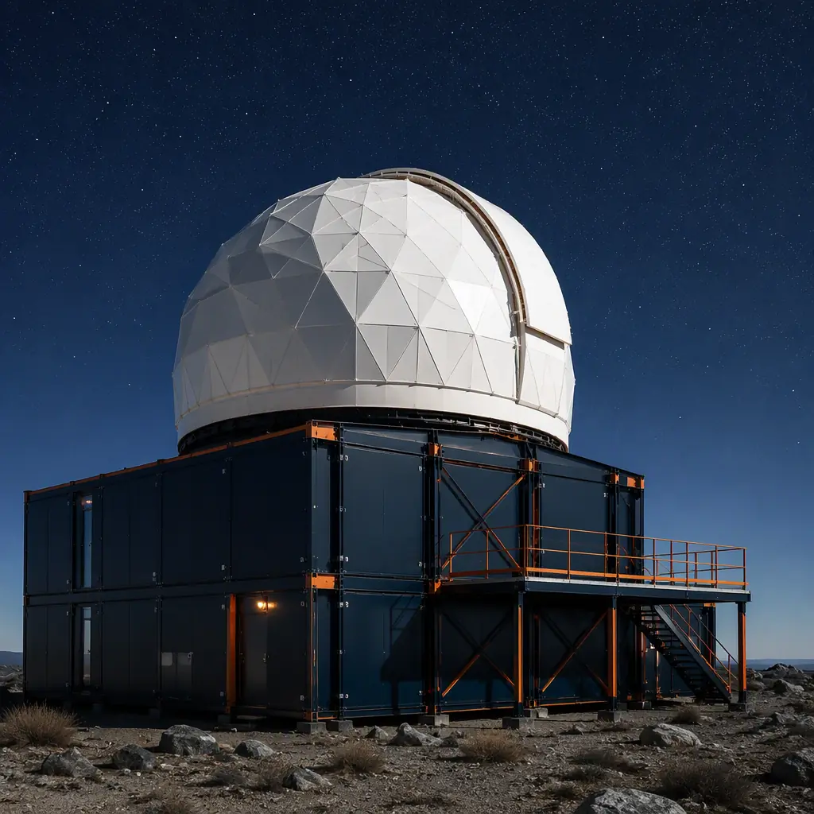
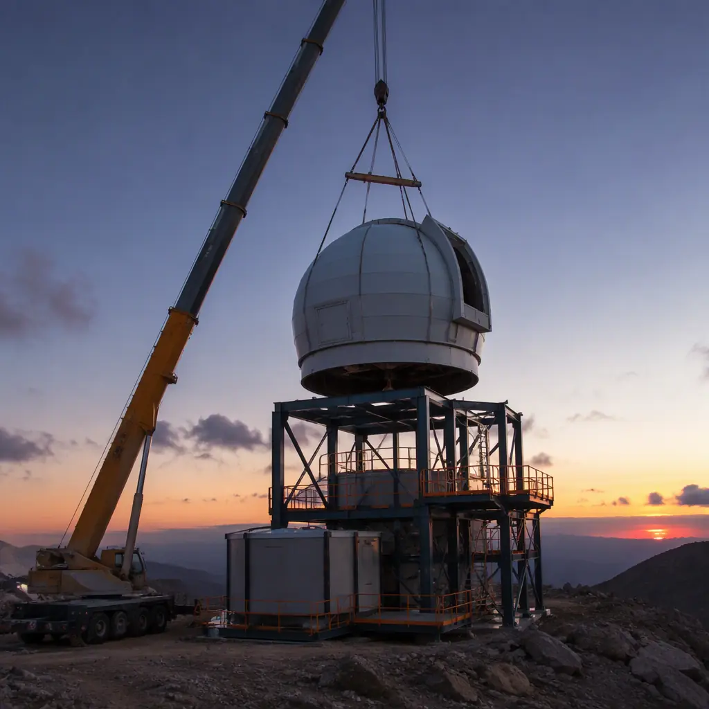
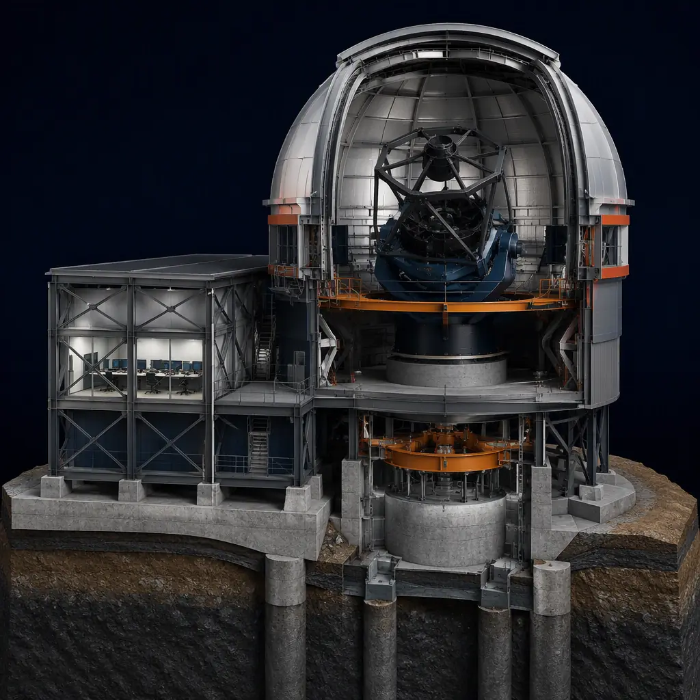
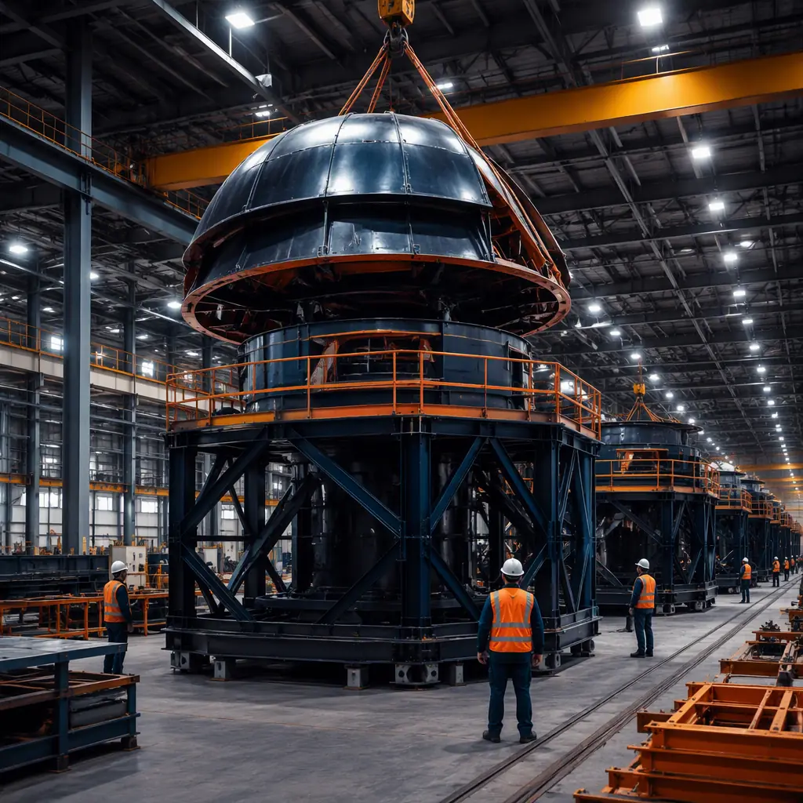

An observatory is one of the most unforgiving building programs in construction: a precision enclosure that must hold its geometry within millimeters while a telescope tracks a star, a thermal environment that must not corrupt the very air the instrument looks through, and a support campus — control rooms, computing, dormitories, workshops, visitor facilities — that often sits at 7,000–14,000 ft elevation on a remote mountain. A research-class dome building of 1,500–5,000 sq ft conventionally takes 14–24 months to deliver, with the enclosure trade sequenced behind custom foundation work and site-built mechanical systems. Modular prefabricated construction restructures the program: the dome support structure, control room, computing suite, dormitory and visitor modules are factory-built as steel-frame units — pre-wired, pre-finished, and vibration-isolated in the plant — then craned into place and commissioned in 6–9 months, with a 20–35% building cost reduction on the support campus and enclosure. The approach extends the factory-built logic we document for modular university academic buildings to the precision, thermal, and remote-logistics demands of astronomy. This guide covers the observatory module package, dome integration, vibration and thermal engineering, cost structure, and procurement path for research institutions, universities, and astrotourism operators.

Why Observatory Construction Is a Precision Enclosure Problem
Observatory buildings fail or succeed on engineering tolerances that ordinary construction never approaches:
- Thermal stability governs image quality. A telescope observes through the air inside and around its dome; warm structure above the aperture creates convection currents — "dome seeing" — that blur images. Observatories therefore demand daytime-to-nighttime temperature control that keeps the enclosure within a few degrees of ambient, which drives insulation, ventilation, and thermal-mass decisions throughout the building.
- Vibration isolation is structural, not mechanical. A research telescope tracking at arc-second precision cannot share a structure with a generator or an air handler running at full load. Telescope piers are conventionally isolated down to bedrock, and supporting buildings must be engineered so their mechanical noise never couples into the instrument — the same isolation logic we document for modular laboratory and research facilities, scaled to vibration tolerances measured in microns.
- Remote sites punish conventional sequencing. Observatory sites are chosen for dark skies, not logistics. At 8,000–14,000 ft, the construction season is short, labor is scarce, and every material delivery is an expedition. Factory production moves the building work to a controlled plant and shrinks on-site work to foundations, crane campaigns, and commissioning — the site-minimization logic we detail for modular construction scheduling.
- Instruments change faster than buildings. Telescopes, cameras, and spectrographs are replaced on multi-year cycles. The building must accept new payloads without structural rework, which favors a modular architecture where the enclosure, pier, and support modules can be reconfigured independently.
Dome vs. Roll-Off vs. Retractable Roof — Form Follows the Instrument
The enclosure type is dictated by the instrument program, and each type integrates differently with modular delivery:
- Dome enclosures — a rotating hemispherical shell with a shutter slit — are the standard for research and public observatories from 3 m up to 20 m+ diameters. The dome is a manufactured product in its own right; modular delivery pairs it with a factory-built support building that carries the pier, control room, and access systems, so the dome and its building arrive as coordinated packages rather than a site improvisation.
- Roll-off roof buildings — a roof that slides back to expose the sky — are favored for survey telescopes, education instruments, and solar observatories. The moving roof and its rails mount on a factory-built steel frame module, with the telescope pier isolated through the floor slab. This is the most modular-friendly enclosure form, and it is the format we recommend for university teaching observatories.
- Retractable-roof and hybrid halls — large apertures for arrays of instruments or public viewing platforms — use the same clear-span steel framing we document for modular building envelope systems, with the roof mechanism integrated in the factory.
The enclosure decision is architectural as much as mechanical: dome buildings are iconic, and public observatories trade heavily on their silhouette. Modular steel framing supports the same dome diameters and forms as site-built structure — the dome itself is bolted to a steel ring beam that ships with the support module — so the signature look is preserved while the building underneath arrives factory-made.
The Modular Observatory Module Package
A modular observatory divides into functional blocks that are manufactured, tested, and shipped independently, then combined on site:
Dome Support & Instrument Buildings
The core module carries the telescope pier, dome ring beam, control room, and instrument access. The pier is the critical element: factory-built as a heavily reinforced steel or concrete-filled column, vibration-isolated from the surrounding floor structure, and delivered with the dome ring pre-drilled to the dome manufacturer's bolt pattern. This is the same factory-precision approach we document for modular building foundation systems, where the connection design is computed in the plant rather than resolved in the field.
Control, Computing & Support Modules
Observatory operations run on clean power, computing, and thermal control. Control room modules are built with raised floors, redundant HVAC, and sound-isolated walls; computing modules follow the same power-and-cooling discipline we document for modular data center construction, with UPS-backed power and precision cooling to keep electronics stable through night operations. Dormitory and workshop modules for remote-site staff use the same factory-built residential and utility units we deliver for modular workforce housing on remote projects.
Visitor & Education Facilities
Public observatories add planetarium halls, exhibit space, classrooms, and a gift shop — the guest-services program we document for modular museum and cultural building construction. Education observatories for universities integrate directly with the academic campus program covered in our university buildings guide.

Vibration Isolation & Thermal Management
The two engineering disciplines that separate observatory buildings from ordinary structures are vibration and thermal control, and both are better executed in a factory. Vibration isolation starts in the module: the telescope pier is decoupled from the floor structure with elastomeric isolation joints, mechanical equipment is mounted on isolated sub-frames, and the control room is acoustically separated from the instrument space — the same acoustic and vibration separation strategies we document for modular acoustic performance and soundproofing. Thermal management starts with the envelope: the dome building is constructed with the same continuous insulation and vapor-barrier discipline we cover for modular cold storage construction, but inverted — the goal is not to hold cold inside but to hold the structure at ambient temperature so it neither radiates heat nor collects it. Ventilation systems are pre-commissioned at the factory to vent the dome slit area during observing, and the control room HVAC is sized and balanced in the plant, collapsing the field commissioning that conventionally consumes months of a remote-site schedule.
Cost Structure — Modular vs. Conventional Observatory Delivery
| Cost Category | Conventional (15,000 sq ft campus) | Modular (15,000 sq ft campus) |
|---|---|---|
| Dome building & enclosure structure | $2.5–4.5M | $1.8–3.2M (factory-built) |
| Control, computing & support modules | $1.8–3.2M | $1.2–2.1M (pre-finished modules) |
| Telescope pier & foundations | $0.8–1.5M | $0.5–0.9M (factory pier column) |
| Field labor, remote-site logistics & schedule risk | $1.2–2.4M | $0.4–0.8M |
| Total Support Campus & Enclosure | $6.3–11.6M | $3.9–7.0M |
The 25–35% building cost reduction compounds with 8–15 months of earlier first light — for research programs that means earlier data, for public observatories it means ticket revenue a full season sooner. For the full economics of modular project delivery, see our 2026 modular cost guide and our developer's ROI analysis.
Remote-Site Logistics: Altitude, Access & Crane Planning
Mountain observatory sites compress construction windows to a few months of workable weather, and every module that arrives factory-finished is a trade that never has to happen at altitude. Modular delivery planning starts with route surveys: module widths are constrained by mountain access roads, crane capacity by site elevation (derated roughly 3% per 1,000 ft above sea level), and the crane campaign is scheduled into the weather window — the logistics and scheduling discipline we document for modular construction transportation and logistics. Because the building program is delivered as a sequence of crane lifts rather than months of site trades, a two-week weather window can complete the enclosure shell — the same rapid-assembly logic we cover for modular scheduling and critical-path compression. For observatories on university campuses or suburban astrotourism sites, access is simpler and the schedule benefit is measured in months rather than seasons, but the factory-quality argument holds identically.

Power, Thermal Control & Data Infrastructure
Observatory operations depend on infrastructure that must be engineered as a system, not patched together: clean, uninterrupted power for instruments and computers; precision thermal control for the enclosure, control room, and computing suite; and high-bandwidth data links to move nightly imaging and telemetry off the mountain. The modular campus delivers these as factory-integrated systems — generator-ready power connections, UPS-backed instrument circuits, and pre-wired network distribution are built into the modules, the operational-resilience approach we document for modular data center construction. Thermal control for the enclosure is pre-commissioned in the plant, and the smart-building monitoring we cover in modular smart building technology gives operators remote visibility of dome temperature, humidity, and power status from anywhere — critical for remote and robotic observatories that run unattended.
Phased Expansion — Adding Domes & Instrument Payloads
Observatories grow in a predictable pattern: a first dome and support campus, then additional instrument buildings, dormitory capacity, and visitor facilities as programs mature. Modular delivery supports this as a phased program — each new dome or support building is factory-built while existing operations continue, then connected during a planned shutdown window, the live-facility phasing logic we document for modular additions and expansions. For universities expanding astronomy programs within capital budgets, the financing and procurement structure is covered in our modular construction lending guide and our RFP procurement guide. Public observatories procured by municipalities and parks departments follow the government delivery path we document for modular government and municipal buildings.

Is Modular Right for Your Observatory Project?
Modular observatory delivery delivers the strongest value for teaching and research observatories (1,500–10,000 sq ft enclosure and support programs) where the schedule is tied to grant cycles, instrument delivery dates, or academic calendars; for remote and high-altitude sites where the construction season is short and site labor is expensive; for public observatories and astrotourism facilities with a fixed opening date tied to funding or season; and for university campuses adding an observatory to an existing science complex (the same integration logic we cover for modular university buildings). For flagship research observatories with 10 m+ class domes and extreme thermal specifications, a hybrid approach — modular control, computing, dormitory, and visitor buildings around a conventionally built dome and pier — captures most of the schedule benefit while keeping the instrument enclosure bespoke. In every case, the factory-built support campus delivers the precision, thermal discipline, and remote-site reliability that observatory programs depend on.